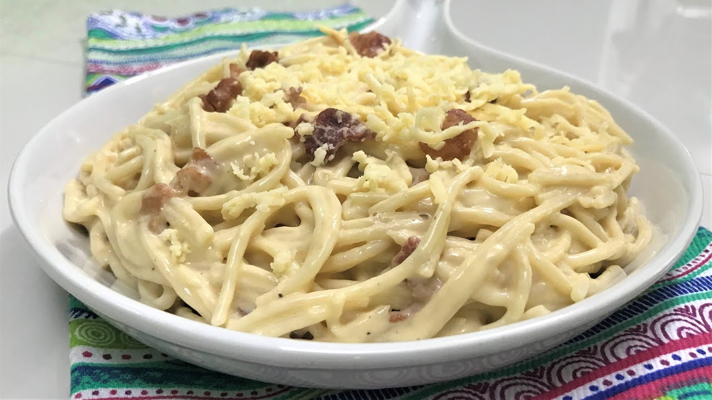

Creamy Carbonara

Pinoy style Carbonara
Pinoy Creamy Carbonara is a Filipino-style adaptation of the classic Italian pasta dish, Carbonara. It features spaghetti noodles tossed
in a creamy sauce made with eggs, cheese, and evaporated milk, giving it a rich and velvety texture. Often, Pinoy Creamy Carbonara includes
additional ingredients such as bacon or ham, garlic, onions, and mushrooms, adding depth and flavor to the dish.
This Filipino version of Carbonara is beloved for its creamy consistency, savory taste, and comforting appeal.
It's a popular choice for family gatherings, celebrations, and special occasions in the Philippines.
Ingredients:
- Spaghetti noodles
- Bacon or ham
- Eggs
- All-purpose cream
- Evaporated milk
- Garlic
- Onions
- Mushrooms (optional)
- Grated Cheese
- Salt and pepper
- Cooking oil
Steps:
- Cook the Spaghetti:
- Bring a large pot of salted water to a boil.
- Add the spaghetti noodles and cook according to package instructions until al dente.
- Once cooked, drain the spaghetti and set it aside.
- Prepare the Sauce:
- In a separate pan, heat some cooking oil over medium heat.
- Add minced garlic and chopped onions to the pan, and sauté until softened and fragrant.
- Add diced bacon or ham to the pan and cook until browned and slightly crispy. If using mushrooms,
add them to the pan and cook until they are tender.
- Make the Creamy Sauce:
- In a bowl, beat the eggs until well combined.
- Gradually add the all-purpose cream and evaporated milk to the beaten eggs,
stirring continuously until smooth and well blended.
- Season the mixture with salt and pepper to taste.
- Combine the Sauce and Spaghetti:
- Once the bacon (or ham) and other ingredients are cooked, reduce the heat to low.
- Add the cooked spaghetti noodles to the pan with the bacon mixture.
- Pour the creamy egg mixture over the spaghetti and toss everything together gently
until the noodles are evenly coated with the sauce.
- Continue to cook over low heat, stirring constantly, until the sauce thickens slightly and coats the spaghetti evenly.
Be careful not to overcook the eggs, as they may scramble.
- Serve:
- Once the Creamy Carbonara is cooked to your desired consistency, remove it from the heat.
- Transfer the carbonara to serving plates or bowls.
- Sprinkle grated cheese on top of each serving for added flavor.
- Garnish with additional freshly ground black pepper, if desired.
- Serve hot and enjoy your homemade Creamy Carbonara!
Enjoy eating your Creamy Carbonara!
To go back to the homepage with list of foods, click Homepage.
Other food with recipes: